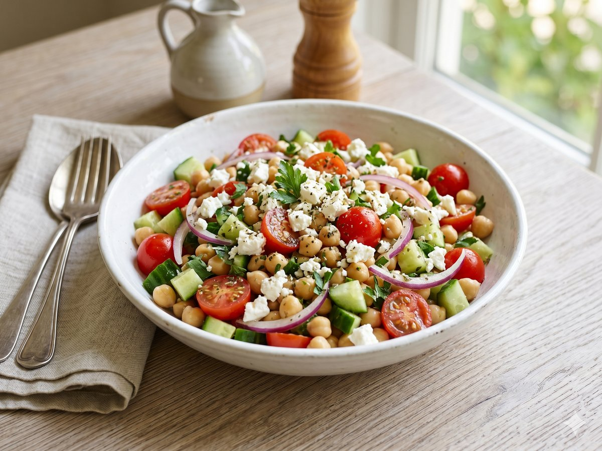

Mediterranean Chickpea Salad
A no-cook, protein-packed lunch that gets better as it sits.
15 min · Serves 4 · Mise Kitchen

Ingredients
- 2 cans chickpeas, drained
- 1 cucumber, diced
- 1 pint cherry tomatoes, halved
- 1/2 red onion, finely chopped
- 1/2 cup feta, crumbled
- 1/4 cup olive oil
- 2 tablespoons lemon juice
- 1 teaspoon dried oregano
- Salt and pepper to taste
Directions
- Combine the chickpeas, cucumber, tomatoes, onion, and feta in a large bowl.
- Whisk the olive oil, lemon juice, and oregano together.
- Pour the dressing over the salad, season, and toss.
- Chill for 15 minutes before serving.
An original recipe from Mise Kitchen. Free to save and cook.